Table of contents |
Author: Johannes Buchner Homepage: http://astrost.at/istics/ Further information: A high-energy view of the galaxy-scale metal gas at z=0.5-3Abstract: At the peak of star formation (z=0.5-3), an important yet hard-to-constrain measurable is the metal gas content of galaxies, a side-product of the evolution of massive stars, and the origin of rocky planets like the earth. At the same time, high-energy source (AGN, GRB) emission is absorbed by this gas along the observers line-of-sight. Therefore it could be interesting to indirectly do galaxy tomography with these column densities. We performed a survey of afterglow obscuration of all Swift-detected gamma-ray bursts (GRB), studying selection biases and advancing analysis methodology. While we find little redshift evolution, a clear correlation of host stellar mass and metal column density is revealed. A simple geometrical model explains the width and shape of the column density distribution and the trend with galaxy mass correlation. Our results implicate the host's galaxy-scale metal gas as the dominant obscurer. >From a galaxy evolution perspective, our study places new independent constraints on the metal gas mass inside galaxies at z=0.5-4. We compare these with modern cosmological simulations (Illustris and EAGLE) and discuss implications for the obscuration of other sources inside high redshift galaxies, such as active galactic nuclei (AGN). 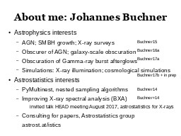 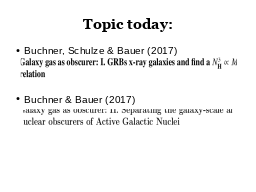 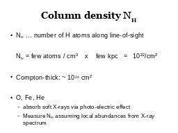 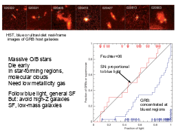
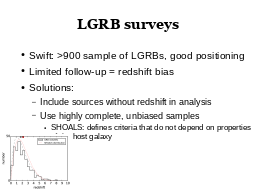
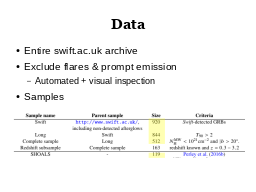
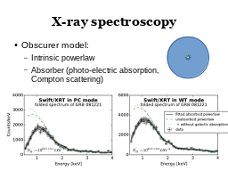
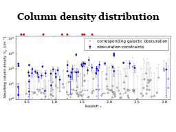
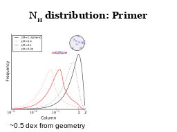
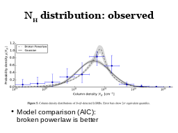
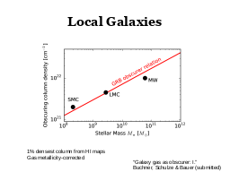
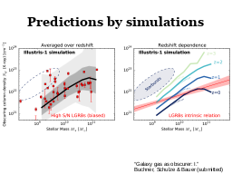
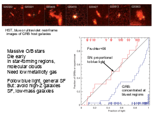
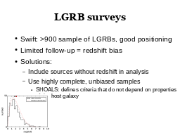
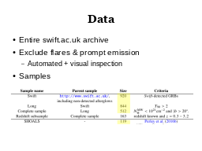
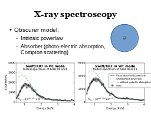
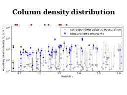
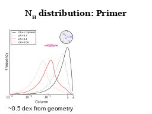
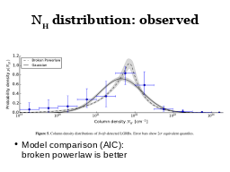
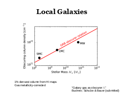
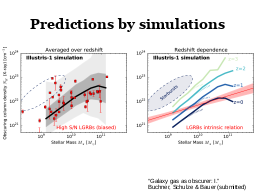
 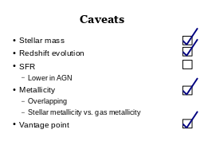
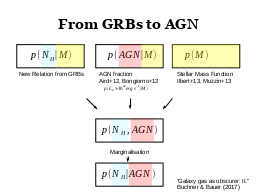
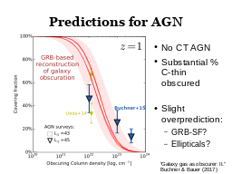
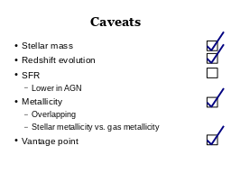
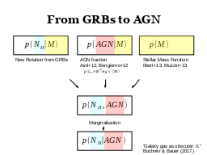
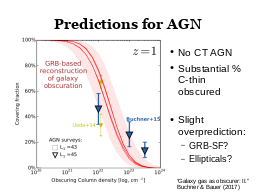


|